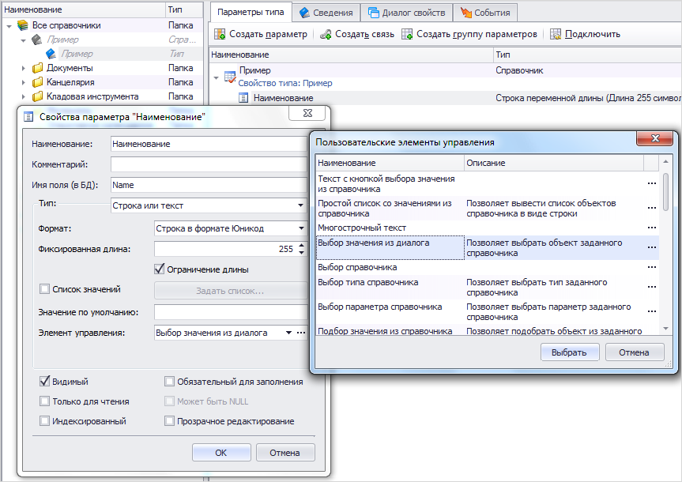
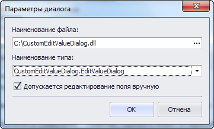
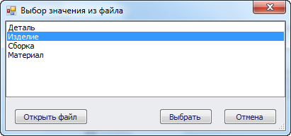

Диалог выбора значения параметра |
В T-FLEX DOCs имеется возможность подключения пользовательских диалогов для выбора значений параметров объектов. Ниже приведен пример создания такого диалога.
В диалоге свойств параметра объекта имеется возможность изменить элемент управления для выбора значения параметра. Один из вариантов элемента управления - выбор значения из диалога.

В настройках этого элемента управления нужно указать путь к сборке со страницами диалогов T-FLEX DOCs и имя класса, описывающего нужный диалог.

В качестве примера рассмотрим диалог выбора значения параметра, позволяющий получить значение из текстового файла, выбранного пользователем.

Исходный код примера с комментариями представлен ниже.
/* Дополнительные библиотеки DevExpress.Utils.v20.1.dll System.Drawing.dll System.Windows.Forms.dll TFlex.DOCs.Common.dll TFlex.DOCs.Model.dll TFlex.DOCs.UI.Common.dll TFlex.DOCs.UI.Controls.dll TFlex.DOCs.UI.Objects.dll TFlex.DOCs.UI.Types.dll*/ using System; using System.ComponentModel; using System.IO; using System.Linq; using System.Windows.Forms; using System.Xml.Serialization; using TFlex.DOCs.Model.Configuration; using TFlex.DOCs.UI.Common.Templates; using TFlex.DOCs.UI.Controls.RepositoryManagers; using TFlex.DOCs.UI.Objects.Settings; namespace CustomEditValueDialog { public class EditValueDialog : BaseDialog, IEditValueDialogView { private ListBox _listBox1; private Button _btnOpenFile; private Button _btnOk; private Button _btnCancel; // Первоначальное значение параметра private object _value; public EditValueDialog() { // Добавляем описание настроек для работы сериализатора XmlSerializerManager.RegisterType(typeof(ExampleEditValueDialogSettingData)); InitializeComponent(); } // Возвращает или задает выбранное в списке значение public object SelectedValue { get { return _listBox1.SelectedItem; } set { SetSelectedValue(value); } } // Обработчик события нажатия на кнопку "Открыть файл" private void btnOpenFile_Click(object sender, EventArgs e) { using (var dialog = new OpenFileDialog()) { dialog.Filter = "Текстовые файлы|*.txt"; if (dialog.ShowDialog(this) == DialogResult.OK) { FilePath = dialog.FileName; FillListEditFromFile(); SetSelectedValue(_value); } } } // Заполняет список строками из файла private void FillListEditFromFile() { if (!string.IsNullOrEmpty(FilePath) && File.Exists(FilePath)) { var lines = File.ReadAllLines(FilePath).Cast<object>().ToArray(); _listBox1.Items.Clear(); _listBox1.Items.AddRange(lines); } } // Устанавливает указанное значение в качестве выбранного значения списка (в случае, если оно есть в списке) // value - Значение private void SetSelectedValue(object value) { if (value != null) { int idx = _listBox1.FindString(value.ToString()); if (idx != -1) _listBox1.SetSelected(idx, true); } } #region IEditValueDialogView // Возвращает значение для записи в параметр DOCs object IEditValueDialogView.GetResultValue() { return SelectedValue; } // Инициализирует диалог текущим значением параметра DOCs // value - Значение параметра DOCs // returns: Значение true, если инициализация прошла успешно; в противном случае - значение false bool IEditValueDialogView.InitializeValue(object value) { _value = value; return true; } #endregion #region Хранимые настройки диалога // Возвращает или задает путь к файлу public string FilePath { get; private set; } protected override IWindowSettings CreateSettings() { return new PersistWindowSettings<ExampleEditValueDialogSettingData>(this); } // Сохраняет настройки диалога public override void SaveSettings() { SettingData.ValueListFilePath = FilePath; base.SaveSettings(); } // Загружает настройки диалога public override void LoadSettings() { base.LoadSettings(); FilePath = SettingData.ValueListFilePath; FillListEditFromFile(); SelectedValue = _value; } // Объект, хранящий настройки диалога [Browsable(false), DesignerSerializationVisibility(DesignerSerializationVisibility.Hidden)] public ExampleEditValueDialogSettingData SettingData { get { return Settings.Data as ExampleEditValueDialogSettingData; } } // Класс, описывающий сохраняемые настройки диалога [XmlType("ExampleEditValueDialogSettingData")] public class ExampleEditValueDialogSettingData : PersistWindowSettingsData { [XmlAttribute] public string ValueListFilePath { get; set; } } #endregion private void InitializeComponent() { _listBox1 = new ListBox(); _btnOpenFile = new Button(); _btnOk = new Button(); _btnCancel = new Button(); SuspendLayout(); // // _listBox1 // _listBox1.Anchor = AnchorStyles.Top | AnchorStyles.Bottom | AnchorStyles.Left | AnchorStyles.Right; _listBox1.FormattingEnabled = true; _listBox1.Location = new System.Drawing.Point(0, 0); _listBox1.Name = "_listBox1"; _listBox1.Size = new System.Drawing.Size(536, 225); _listBox1.TabIndex = 0; // // _btnOpenFile // _btnOpenFile.Anchor = AnchorStyles.Bottom | AnchorStyles.Left; _btnOpenFile.Location = new System.Drawing.Point(12, 231); _btnOpenFile.Name = "_btnOpenFile"; _btnOpenFile.Size = new System.Drawing.Size(104, 23); _btnOpenFile.TabIndex = 1; _btnOpenFile.Text = "Открыть файл"; _btnOpenFile.UseVisualStyleBackColor = true; _btnOpenFile.Click += btnOpenFile_Click; // // _btnOk // _btnOk.Anchor = AnchorStyles.Bottom | AnchorStyles.Right; _btnOk.DialogResult = DialogResult.OK; _btnOk.Location = new System.Drawing.Point(358, 231); _btnOk.Name = "_btnOk"; _btnOk.Size = new System.Drawing.Size(75, 23); _btnOk.TabIndex = 2; _btnOk.Text = "Выбрать"; _btnOk.UseVisualStyleBackColor = true; // // _btnCancel // _btnCancel.Anchor = AnchorStyles.Bottom | AnchorStyles.Right; _btnCancel.DialogResult = DialogResult.Cancel; _btnCancel.Location = new System.Drawing.Point(449, 231); _btnCancel.Name = "_btnCancel"; _btnCancel.Size = new System.Drawing.Size(75, 23); _btnCancel.TabIndex = 3; _btnCancel.Text = "Отмена"; _btnCancel.UseVisualStyleBackColor = true; // // EditValueDialog // ClientSize = new System.Drawing.Size(536, 262); Controls.Add(_btnCancel); Controls.Add(_btnOk); Controls.Add(_btnOpenFile); Controls.Add(_listBox1); Name = "EditValueDialog"; ShowIcon = false; Text = "Выбор значения из файла"; ResumeLayout(false); } } }